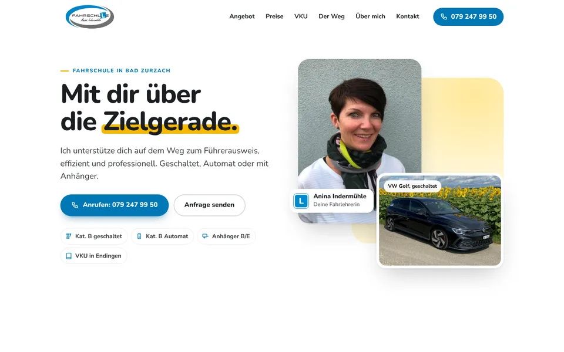
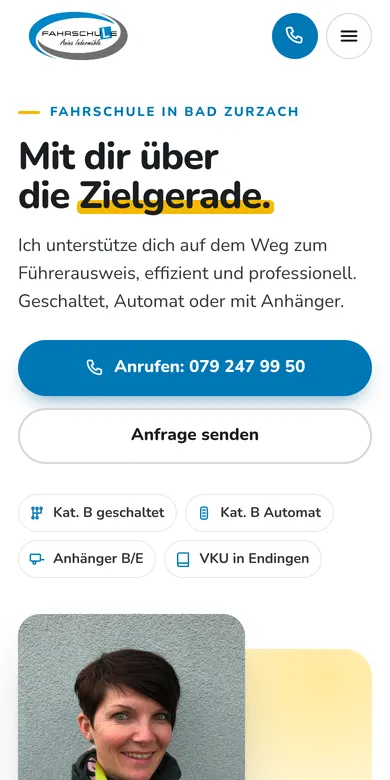

Design A
Sonnenblumen
Hell und sonnig, in Ihrem Logo-Blau und dem Gelb der Sonnenblumen. Vorne Sie und der Golf, dann die Wahl zwischen geschaltet und Automat, klare Preiskarten, der nächste VKU in Endingen und ein sauber beschriftetes Anfrageformular.
- Hell
- Fotos im Mittelpunkt
- Anfrageformular